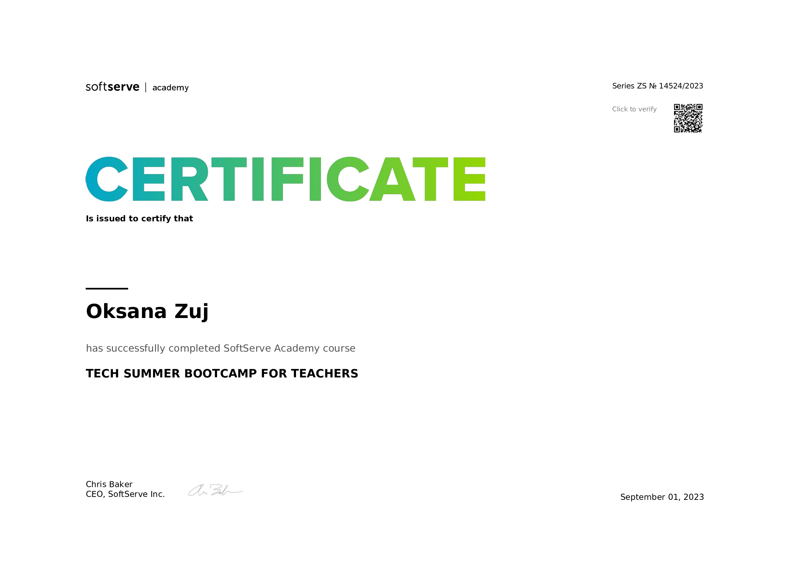
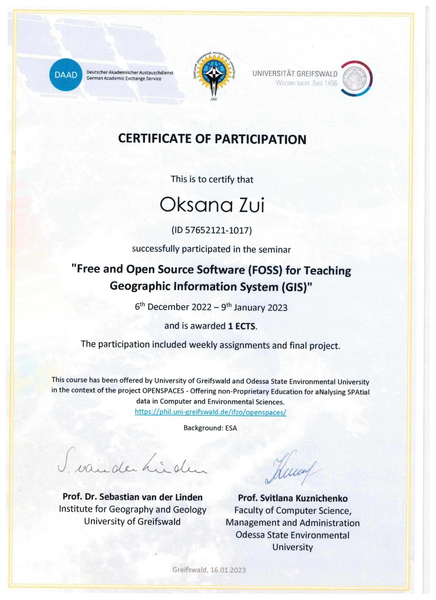

Igor Petrov, Vladislav Mykhailenko, Roman Kharchenko, Yurii Gunchenko, Aleksandr Kochetkov and Oksana Zui “Intelligent analysis of the causes of the Challenger space shuttle disaster” // Proceedings of the 12th International Conference Information Control Systems & Technologies (ICST 2024) Odesa, Ukraine, September 23–25, 2024. CEUR Workshop Proceedings. – 2024. – Vol.3790. – CEUR-WS.org – P. 295-305. ISSN 1613-0073 (Scopus) https://ceur-ws.org/Vol-3790/paper26.pdf
Орловська С., Зуй О. (2024). Дослідження високотемпературного тепломасообміну двофракційних газових суспензій та окремих частинок вуглецю в нагрітому повітрі. Фізика та хімія твердого тіла , 25 (2), 338–345. (Scopus) https://doi.org/10.15330/pcss.25.2.338-345
Pasichnyk Natalia, Komarchuk Dmytro, Opryshko Oleksiy, Gunchenko Yurii, Shvorov Sergey, Zui Oksana. Validation of data obtained after field sensing using UAV for management of future crops / CEUR Workshop Proceedings, 2020. Vol. 2683. P. 328 – 334.
Orlovskaya S. G., Kalinchak V.V., Zuj O. N., and Liseanskaia M. V. Study of Ignition and Combustion of Two-Fraction Coal-Air Suspension //Ukr. J. Phys. 2018. Vol. 63, No 4, P. 370-375.
Orlovskaya S. G., Zuy O. N., Liseanskaia M. V. Influence of gas temperature on ignition, burning and extinction of carbon particles-gas suspension // Journal of Physics: Conference Series 891 012234 http://iopscience.iop.org/article/10.1088/1742-6596/891/1/012234
Orlovskaya S. G., Kalinchak V.V., Zuy O.N. Effect of an Internal Reaction on the Characteristics of High-Temperature Heat and Mass Transfer of Gas Suspensions of Carbon Particles // High Temperature.– 2014. Vol.52, No 5. – P. 716-723. http://link.springer.com/article/10.1134%2FS0018151X14050149
У наукових виданнях, включених до переліку наукових фахових видань України:
Михайленко В.С., Гунченко Ю.О., Лещенко В.В., Зуй О.М. Методика синтезу нечіткої адаптивної системи управління складним об'єктом. // Збірник наукових праць Військового інституту Київського національного університету імені Тараса Шевченка. – К. 2024. – № 84. С. 54-66.
Panchenko, B., Bukata, L., Bahachuk, D., Martynovych, L. and Zui, O. (2024) “Cluster modeling of the interaction of statyonary SH-waves with a system of curvilinear cracks in a half-space”, International Scientific Technical Journal "Problems of Control and Informatics", 69(2), pp. 47–60. doi: 10.34229/1028-0979-2024-2-4.
Орловська С. Г., Шкоропадо М. С., Зуй О. М. Горіння палива на основі алканів під дією електричного поля / Авиационно-космическая техника и технология. № 8(2019) С. 39-48. doi: 10.32620/aktt.2019.8.06
Орловская С. Г., Зуй О. Н. Оптимальные режимы использования угольного топлива в топочных процессах / Альтернативные источники сырья и топлива.Сборник научных трудов. Минск : Издательский дом «Беларуская навука». 2020. Вып. 4.-С.87-94.
Михайленко В.С., Камєнєва А.В., Стукалов С.А., Зуй О.М Моделювання нейромережевої системи ідентифікації та керування параметрами технічного об’єкта // Системні технології. Регіональний міжвузівський збірник наукових праць. – Випуск 3 (146). - Дніпро, 2023. – С.10-22.
Михайленко В.С., Коренкова Г.В., Зуй О.М. Аналіз системи паралельного нейроуправління динамічними обיִєктами // Збірник наукових праць Військового інституту Київського національного університету імені Тараса Шевченка. К.: ВІКНУ, 2023. № 78, 2023. – С.135-144.
Михайленко В.С., Шевченко Т.І., Стукалов С.А., Зуй О.М., Мартинович Л.Я. Нечітка експертна система для керування температурою повітря у приміщеннях торговельно-розважального центру // Збірник наукових праць Військового інституту Київського національного університету імені Тараса Шевченка. К.: ВІКНУ, 2023. № 79, 2023. – С.128-129
Гунченко Ю.О., Камєнєв К.І., Камєнєва А.В., Зуй О.М. Інформаційна система для завантаження контейнерного судна з урахуванням структурних та операційних обмежень // Збірник наукових праць Військового інституту Київського національного університету імені Тараса Шевченка. – К. 2023. – № 78. – С. 47 – 54.
Тези доповідей:
11. Коренкова Г.В., Мартинович Л.Я., Зуй О.М. - Вплив використання інформаційних технологій та онлайн-ресурсів на якість освіти. vіі всеукраїнська науково-практична конференція традиційні та інноваційні підходи розвитку сучасної освіти в україні. 16-17 травня 2024 М.Одеса
Pasichnyk Natalia, Komarchuk Dmytro, Opryshko Oleksiy, Gunchenko Yurii, Shvorov Sergey, Zui Oksana. Validation of data obtained after field sensing using UAV for management of future crops. International Scientific and Practical Conference «Intellectual Systems and Information Technologies». Odesa, 2021. P. 347 – 353.
Orlovskaya S.G., Zuy O.N. Study of the growth of crystalline oxide structures on the surface of tungsten in the air. Spectroscopy of Molecules and Crystals : the book abstracts of reports presented at XXIVth Galyna Puchkovska International School-Seminar (Odesa, Ukraine 25—30 August, 2019). Odesa. 2019.
Орловська С.Г., Шкоропадо М.С., Зуй О.М. Дослідження горіння палива на основі алканів під дією електричного поля. ХXIV - міжнародний конгрес двигунобудівників: Тези доповідей. – Харків: Нац. аерокосмічний ун-т «Харк. авіац. ін-т». Харків. 2019. С.75.
Орловская С.Г., Зуй О.Н. Воспламенение и горение двухфракционных газовзвесей углеродных частиц. XХVIIІ міжнародна наукова конференція «Дисперсні системи» (16 - 20 вересня 2019 р). Одеса. Україна. С. 80.
Орловская С.Г., Зуй О.Н. ОПТИМАЛЬНЫЕ РЕЖИМЫ ИСПОЛЬЗОВАНИЯ УГЛЯ В ТОПОЧНЫХ ПРОЦЕССАХ Альтернативные источники сырья и топлива: тезисы докладов VII Международной научно-технической конференции «АИСТ-2019».(Минск, 28 мая – 30 мая 2019 г.). Минск. 2019. С. 104.
Коренкова Г. В., Зуй О. М., Стукалов С. А. Моделювання квантового алгоритму Гровера / Інформаційні технології та інженерія : Всеукраїнська науково-практична конференція молодих вчених, аспірантів і студентів : тези доп., 7–10 лютого 2023 р. / ЧНУ імені Петра Могили. Миколаїв, 2023. С.21.
Зуй О. М., Коренкова Г. В., Стукалов С. А. Особливості використання графічного редактору FIGMA у навчальному процесі / Інформаційні технології та інженерія : Всеукраїнська науково-практична конференція молодих вчених, аспірантів і студентів : тези доп., 7–10 лютого 2023 р. / ЧНУ імені Петра Могили. Миколаїв, 2023. С.127.
Гунченко Ю.О. Пасенченко Т.О. Стукалов С.А. Зуй О.М. ВІЗУАЛЬНА ОДНОЧАСНА ЛОКАЛІЗАЦІЇ ТА КАРТОГРАФУВАННЯ ДЛЯ МОБІЛЬНИХ ПРИСТРОЇВ / Військова освіта і наука: сьогодення та майбутнє : зб. тез доповідей ХІХ Міжнародної науково-практичної конференції, м. Київ, 10 листопада 2023 р. Київ : Військовий інститут Київського національного університету імені Тараса Шевченка, 2023. 406 с. С. 32
Монографії:
Levchenco Andrii, Sharipova llnara, Shugailo Yurii, Bercov Yurii, Korenkova Hanna, Zuj Oksana Errors of Image Compressions by The UAV Comruter by Different Methods in Real Time / Part of the monograph “Intellectual systems and information technologies”. Vienna: Premier Publishing s.r.o. 2021. - P. 5 - 21.
DOI https://doi.org/10.29013/GunchenkoY.ISAIT.2021.184 .
Орловская С.Г., Калинчак В.В., Зуй О.Н., Лисянская М.В. Исследование закономерностей сжигания угольного топлива в дисперсном виде. // Теплотехніка, енергетика та екологія в металургії: Колективна монографія у двох книгах. – Книга друга / Під загальною редакцією д.т.н., проф. Ю.С. Пройдака. – Дніпро : Нова ідеологія, 2017. – 336 с. -C.26 -30.
Навчально-методичні посібникі:
Кaмєнєвa А.В., Зуй О.М., Зудіхін Є.О. Програмне забезпечення мобільних пристроїв. Частина 1. // Методичні вказівки до лабораторних робіт для здобувачів першого (бакалаврського) рівня вищої освіти, спеціальностей 122 "Комп'ютерні науки", 123 "Комп'ютерна інженерія", 151 "Автоматизація та комп'ютерно-інтегровані технології"Методичні вказівки до лабораторних робіт для здобувачів першого (бакалаврського) рівня вищої освіти, спеціальностей 122 "Комп'ютерні науки", 123 "Комп'ютерна інженерія", 151 "Автоматизація та комп'ютерно-інтегровані технології" – 2024. – Одеса: Видавництво: Олді+, – 68 с. Електронне видання, режим доступу
Кaмєнєвa А.В., Зуй О.М., Зудіхін Є.О. Програмне забезпечення мобільних пристроїв. Частина 2. // Методичні вказівки до лабораторних робіт для здобувачів першого (бакалаврського) рівня вищої освіти, спеціальностей 122 "Комп'ютерні науки", 123 "Комп'ютерна інженерія", 151 "Автоматизація та комп'ютерно-інтегровані технології"Методичні вказівки до лабораторних робіт для здобувачів першого (бакалаврського) рівня вищої освіти, спеціальностей 122 "Комп'ютерні науки", 123 "Комп'ютерна інженерія", 151 "Автоматизація та комп'ютерно-інтегровані технології" – 2024. – Одеса: Видавництво: Олді+, – 58 с. Електронне видання, режим доступу
Коренкова Г.В., Мартинович Л.Я., Зуй О.М. ТЕОРІЯ АЛГОРИТМІВ. Методичні вказівки до виконання лабораторних робіт -«ТЕС»: Одеса 2023, - 68.
Підвищення кваліфікації, сертифікати:
Стажування на кафедрі інформаційних технологій Одеського державного екологічного університету з 20 лютого 2023 р. по 2 квітня 2023 р. за програмою «Інформаційні технології в професійній діяльності фахівця» обсягом 180 академічних годин, 6 кредитів ЄКТС (дистанційно). Затверджено Наказ № 424-18 від 20.03.2023 р
CERTIFICATE Is issued to certify that Oksana Zuj has successfully completed SoftServe Academy course TECH SUMMER BOOTCAMP FOR TEAHERS. Series ZS № 14524/2023. September 01,2023.

Certificate of attendance of HTML & CSS coding course. Ukraine, Zaporizhzhia, 16.06.2023.
Certificate of participation (ID 57652121-1017) successfully participated in the seminar "Free and Open Sourse Software (FOSS) for Teaching Geographfic Informstion System (GIS)" 6 Desember 2022 - 9 January 2023 and is awerded 1 ECTS.

Членство в ГО "Прогресильні" - сертифікат 0760/25 з січня по 31 грудня 2025 року

_page-0001.jpg)